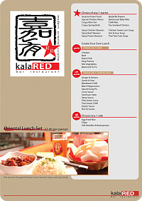
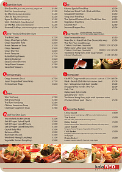

먼~~옛날 SAKE BOMB 티셔츠 디자인 이후
런치메뉴 & 신문에넣을 AD 디자인부탁을 받아서
찔금찔금 만들었는데;;;
최근 정신줄을 놔버려서;; 하기싫어 죽는줄 알았다;;;;
지금 학교 컴실이 죄다 문을닫은관계로;;
쬐그만 내 놋북으로 작업하려니 아무래도 작업속도는 당연히 더디고;;;
작업화면 자체가 작으니 깝깝시렵고;;;;
혼자 무지하게 성질부리면서 만들었다는 ㅡㅡ;;
(이럴때보면 나 진짜 성격급한거 같아;;;;;)
메뉴디자인 이라던가 신문광고같이
정해진 사이즈에 한정된 layout안에서
얼마나 깔끔하고 이쁘게 만드냐;;; 이게 정말 어려운거 같아용 ;ㅂ;
게다가 이미지랑 텍스트사이 간격, 1~2mm 엄청 집착하는 나로서는
시안만들어갔는데 추가주문이 들어오거나 이미지를 더 넣어달라고하면
(이게 작업할때 당연한 수순임에도 불구하고;;)
분노의 파이어브레스를 뿜..............OTL
이상하게도;; 알바 / 기숙사 같은곳에서 저런부탁을 종종듣는편인듯
그냥 단순히
"오옷!! 그림공부하는 학생이알바로 들어왔다
이기회에 뭔가 만들어달라고 하자+_+"
뭐 이런 심리인가?^^;;;
요건 오래된 파일폴더안에서 찾아낸
일본서 기숙사살때 주방아주머니 part time모집안내^^;;;
이게....2004년인가2005년에 일러스트레이터 프로그램
펜툴도 제대로 파악못했을때 만든거임;;
그때 관리인 부부에게 이파일 드렸더니
기숙사 한쪽벽에 저 그림이 와장창 붙어있어서
보고 깜짝놀랐던 기억이^^;;;;
워울~오랜만에 보니 감회가 새롭군요^^;;;;;
5년이 넘은 포스터인데 시급920엔의 위력 ㅋㅋㅋㅋ
메뉴디자인 하믄서 덕분에 chinese 메뉴는 많이 알았다.........고 쓸려했는데
사실 말만 chinese고 타이/일본/베트남스타일등 다 있음;;;
이번에 새로 만들면서 추가된 메뉴 리스트에 '한국식김치만두'
뭐 이런 메뉴도 있는데;; 저게 과연 내가생각한 그 김치만두가 맞을려나 심히 의심됨;;;
게다가 아시아요리 이름을 영어식으로 바꾸다보니 웃기는 이름도 대따많다;;
그중 젤 웃긴건;; yakitorichiken - ㅡㅡ;;
...........더이상 수정&오타발견이 없기를
비나이다 비나이다~~~
의욕저하 + 학교컴실사용불가 로 인해 내 놋북에서
일러스트레이터 프로그램 돌리는거 자체가 넘 힘들어요 ;ㅂ; (←쯔쯔쯔;;;)